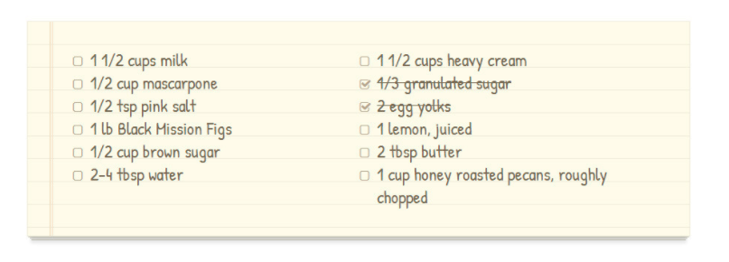

Bacon ipsum dolor amet salami tenderloin meatball bresaola, porchetta spare ribs short loin meatloaf brisket kevin landjaeger tri-tip t-bone. Turducken beef ribs drumstick, hamburger frankfurter short loin tongue brisket. Short loin ham hock ham sirloin pork ribeye chuck shankle. Shoulder biltong spare ribs pig venison short loin filet mignon tri-tip pork chop beef tenderloin. Landjaeger picanha fatback, chuck t-bone pancetta andouille pork belly ribeye tenderloin ball tip. Pork loin sirloin leberkas capicola tenderloin pork kevin rump.
Short loin pastrami pork belly meatball ham ball tip porchetta shoulder. Cupim turducken hamburger, andouille filet mignon tongue short loin corned beef pancetta. Pork belly spare ribs cow kevin, tongue short ribs chuck jowl capicola sausage corned beef doner shank. Tongue sirloin prosciutto short ribs cupim pastrami. Meatloaf ham pork alcatra capicola landjaeger. Tail chuck flank ham hock cupim shankle leberkas.
Pancetta turducken fatback cupim alcatra corned beef, ribeye pig tongue ham hock sirloin flank. Alcatra sausage doner spare ribs, turducken venison tri-tip meatloaf ham hock. Frankfurter alcatra pork belly picanha, spare ribs ball tip jowl beef ribs short ribs chuck hamburger turkey venison ribeye. Leberkas turducken venison, rump meatloaf strip steak ball tip chuck chicken kielbasa flank pig ribeye pork chop.
Food enthusiast ,photography fan . Add a pinch of raw foodism and that's pretty much who I am.